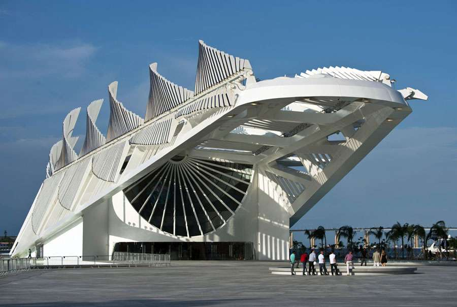
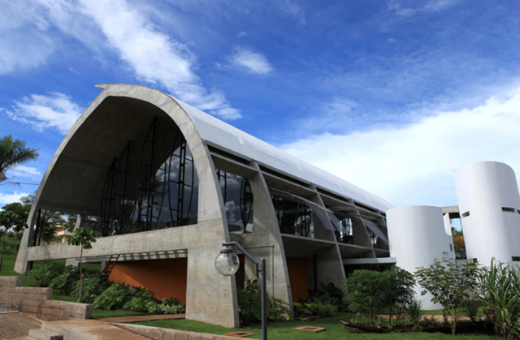
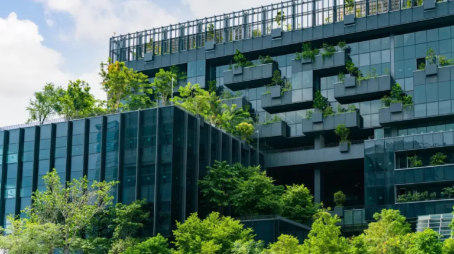

Museu do Amanhã, Rio de Janeiro-RJ

Centro Sebrae de Sustentabilidade, Cuiabá-MT

Green Building Council Brasil(GBC), São Paulo-SP
Projetos Inspiradores
Nessa sessão trouxemos alguns projetos de Arquitetura Sustentável, com o foco na utilização de materiais recicláveis ou que não tenham um
impacto ambiental tão agressivo.
Museu do Amanhã, Rio de Janeiro-RJ
O Museu do Amanhã é um dos principais pontos turísticos do Rio de Janeiro. Projeto pelo arquiteto Oscar Niemeyer, o Museu foi adaptado para o clima da Cidade maravilhosa,
possuindo vidros para que o sol ilumine a estrutura de forma natural, evitando a utilização de meios de iluminação artificial.
Esses são os benefícios dos materiais utilizados na obra:
Concreto reforçado: Ao utilizar concreto reforçado a estrutura terá mais vida útil, evitando manutenções ou problemas estruturais que podem resultar em falhas catastróficas que comprometam o ambiente.
Estrutura metálica reciclável: Utilização de materiais recicláveis é de suma-importância para o futuro do planeta para evitar o descarte de materiais que podem poluir o meio-ambiente.
Painéis de vidro de alta eficiência: Ótimo para refleter o calor, mantendo o interior fresco reduzindo o uso de ar-condicionado e minimizando a necessidade de iluminação artificial durante o dia.
Além disso, o Museu do Amanhã conta com um ótimo sistema de Impacto Ambiental Reduzido, entre eles:
Sistema de captção de água da chuva para reuso.
Uso de energia solar por meio de painéis fotovoltaicos ajustáveis.
Ventilação natural reduzindo o consumo de ar condicionado.
Centro Sebrae de Sustentabilidade, Cuiabá-MT
O Centro Sebrae de Sustentabilidade, localizado em Cuiabá, Mato Grosso, é uma referência nacional em construção sustentável e arquitetura adaptada ao
clima quente e seco da região. O projeto combina elementos modernos com técnicas tradicionais, priorizando o uso consciente de recursos naturais e
materiais locais.
Esses são os benefícios dos materiais utilizados na obra:
Tijolos de solo-cimento: Fabricados no local, são uma alternativa sustentável ao tijolo convencional, reduzindo a emissão de carbono e o consumo de energia no transporte e na produção.
Cobertura de madeira certificada: Garante a sustentabilidade da origem do material e melhora o conforto térmico interno.
Revestimentos naturais: Como o barro e o bambu, que proporcionam isolamento térmico e uma integração harmoniosa com o meio ambiente.
Além disso, o Centro Sebrae de Sustentabilidade implementa diversos sistemas de Impacto Ambiental Reduzido, incluindo:
Captação e reuso de água da chuva para irrigação e uso em instalações sanitárias.
Uso de energia solar por meio de painéis fotovoltaicos que suprem grande parte das necessidades energéticas do edifício.
Ventilação passiva, reduzindo a necessidade de sistemas de climatização artificiais, adaptando o espaço ao clima da região.
Green Building Council Brasil(GBC), São Paulo-SP
O Green Building Council Brasil é uma organização focada em promover a construção sustentável no Brasil, mas sua sede também serve como exemplo de arquitetura sustentável.
Projetado com estratégias adaptadas ao clima tropical de São Paulo, o edifício é referência em eficiência energética e uso consciente de recursos naturais.
Esses são os benefícios dos materiais utilizados na obra:
Concreto reciclado: Ao utilizar concreto com agregados reciclados, reduz-se o consumo de matéria-prima virgem e o impacto ambiental da construção.
Painéis solares integrados: Contribuem para a produção de energia renovável, diminuindo a dependência de fontes não renováveis.
Isolamento térmico de alta eficiência: Garante conforto térmico interno, reduzindo o consumo de energia elétrica com aquecimento ou resfriamento.
Além disso, o GBC conta com um sistema de Impacto Ambiental Reduzido, incluindo:
Coleta e reuso de água da chuva, diminuindo o desperdício de água potável.
Uso de iluminação LED de baixo consumo energético.
Infraestrutura para gestão de resíduos sólidos, promovendo reciclagem e compostagem.